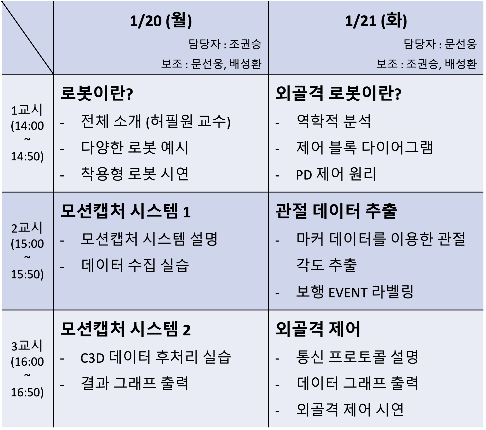
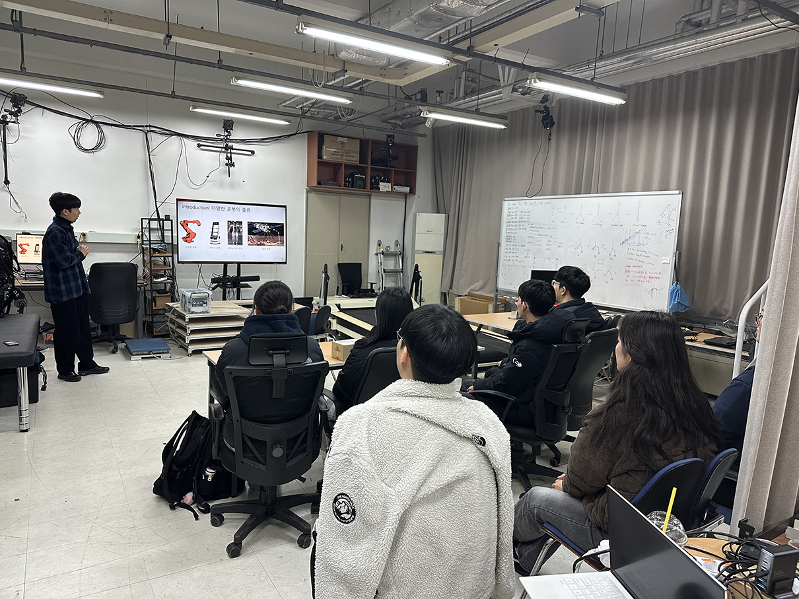

작성자: 허필원
우리 연구실에서는 지난 2025년 1월 21일과 22일, "2025년 자율형 공립고 2.0 GIST Lab 프로그램"에 참여하여 고등학생들에게 로봇공학과 착용형 로봇을 소개하고 실습을 진행하였습니다.
이 프로그램은 과학기술에 관심 있는 고등학생들에게 GIST와 연구 현장을 소개하고, 실험실 연구를 직접 체험하게 함으로써 과학적 호기심과 진로 탐색에 도움을 주기 위해 마련된 행사입니다. 우리 연구실에서는 박사과정 조권승, 문선웅 학생과 석사과정 배성환 학생이 주축이 되어 학생들과 함께 의미 있는 시간을 가졌습니다.
첫째 날은 로봇공학 개론과 착용형 로봇 시연으로 진행되었습니다. 특히 엔젤 로보틱스의 착용형 로봇을 직접 시연하며 학생들의 관심을 끌었습니다. 둘째 날은 로봇을 움직이는 원리와 관련된 역학적 분석 및 제어 이론(PD 제어 원리 등)을 배우고 직접 체험해보는 시간을 가졌습니다.
이후 모션캡쳐 시스템을 이용하여 실제 사람의 움직임 데이터를 수집하고 분석하는 실습이 진행되었습니다. 모션캡쳐 시스템의 원리와 데이터 처리 과정을 배우고, 실제로 학생들이 데이터를 획득하여 관절 각도를 추출하고 보행 EVENT를 라벨링하는 과정을 체험했습니다. 마지막으로는 획득된 데이터를 기반으로 우리 연구실에서 개발한 외골격 로봇의 제어 원리를 이해하고 직접 로봇 제어를 시연하는 시간을 가졌습니다.
우리 연구실의 구성원들은 미래 과학기술을 이끌어갈 고등학생들에게 로봇 기술의 중요성과 흥미를 전달할 수 있어서 보람을 느꼈습니다. 앞으로도 우리 연구실은 다양한 교육 및 체험 프로그램을 통해 로봇공학의 매력을 널리 알리는 데 노력할 것입니다.
아래 이미지는 우리 연구실에서 진행한 프로그램 일정표입니다.


참가자 명단: 허필원, 조권승, 문선웅, 배성환, 수완고 학생, 전남고 학생